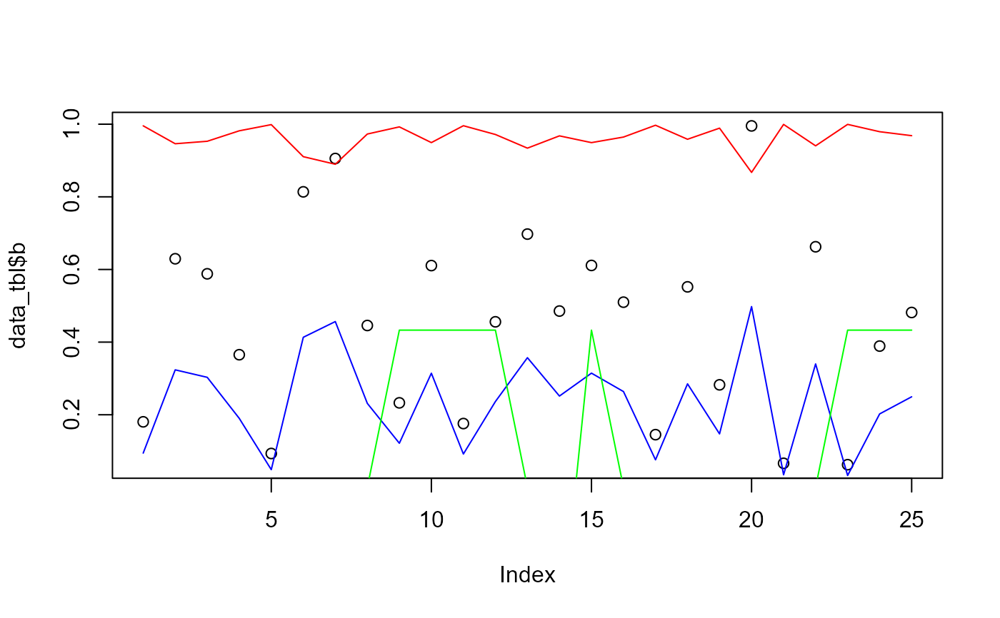

Takes a numeric vector and will return a vector of one of the following:
"sin"
"cos"
"sincos" This will do value = sin(x) * cos(x)
Usage
hai_fourier_vec(.x, .period, .order, .scale_type = c("sin", "cos", "sincos"))Details
Takes a numeric vector and will return a vector of one of the following:
"sin"
"cos"
"sincos"
The internal caluclation is straightforward:
sin = sin(2 * pi * h * x), whereh = .order/.periodcos = cos(2 * pi * h * x), whereh = .order/.periodsincos = sin(2 * pi * h * x) * cos(2 * pi * h * x)whereh = .order/.period
This function can be used on it's own. It is also the basis for the function
hai_fourier_augment().
See also
Other Vector Function:
hai_fourier_discrete_vec(),
hai_hyperbolic_vec(),
hai_kurtosis_vec(),
hai_scale_zero_one_vec(),
hai_scale_zscore_vec(),
hai_skewness_vec(),
hai_winsorized_move_vec(),
hai_winsorized_truncate_vec()
Examples
suppressPackageStartupMessages(library(dplyr))
len_out <- 25
by_unit <- "month"
start_date <- as.Date("2021-01-01")
data_tbl <- tibble(
date_col = seq.Date(from = start_date, length.out = len_out, by = by_unit),
a = rnorm(len_out),
b = runif(len_out)
)
vec_1 <- hai_fourier_vec(data_tbl$b, .period = 12, .order = 1, .scale_type = "sin")
vec_2 <- hai_fourier_vec(data_tbl$b, .period = 12, .order = 1, .scale_type = "cos")
vec_3 <- hai_fourier_vec(data_tbl$date_col, .period = 12, .order = 1, .scale_type = "sincos")
plot(data_tbl$b)
lines(vec_1, col = "blue")
lines(vec_2, col = "red")
lines(vec_3, col = "green")
